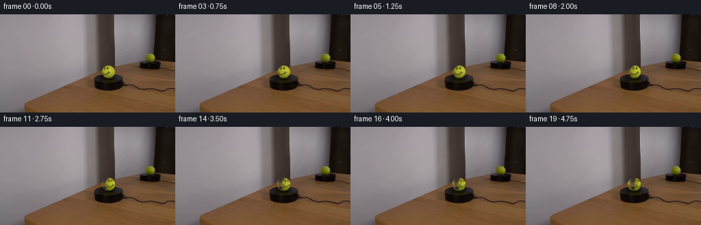
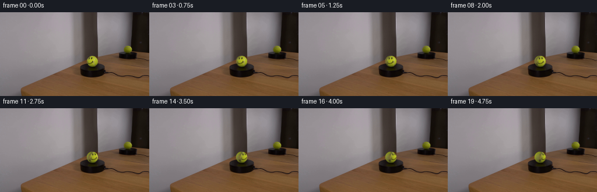
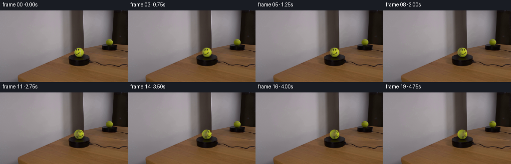
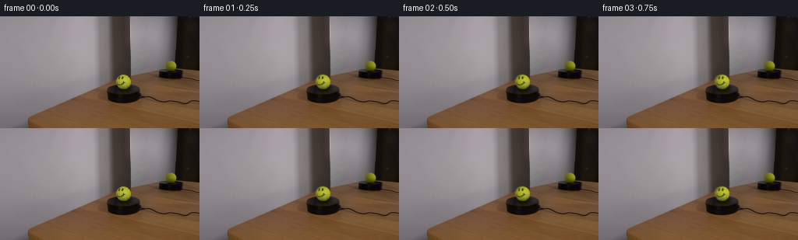
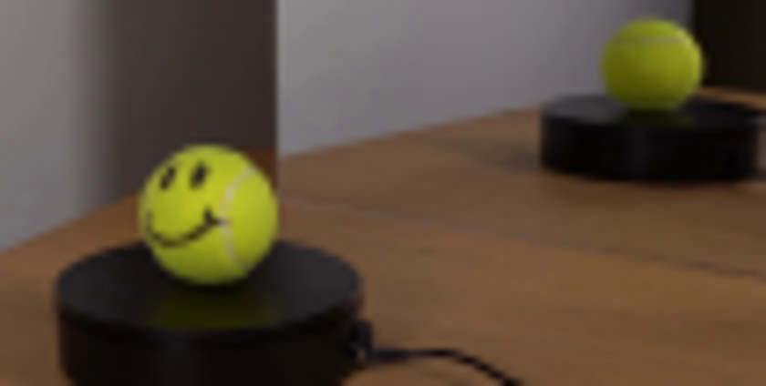
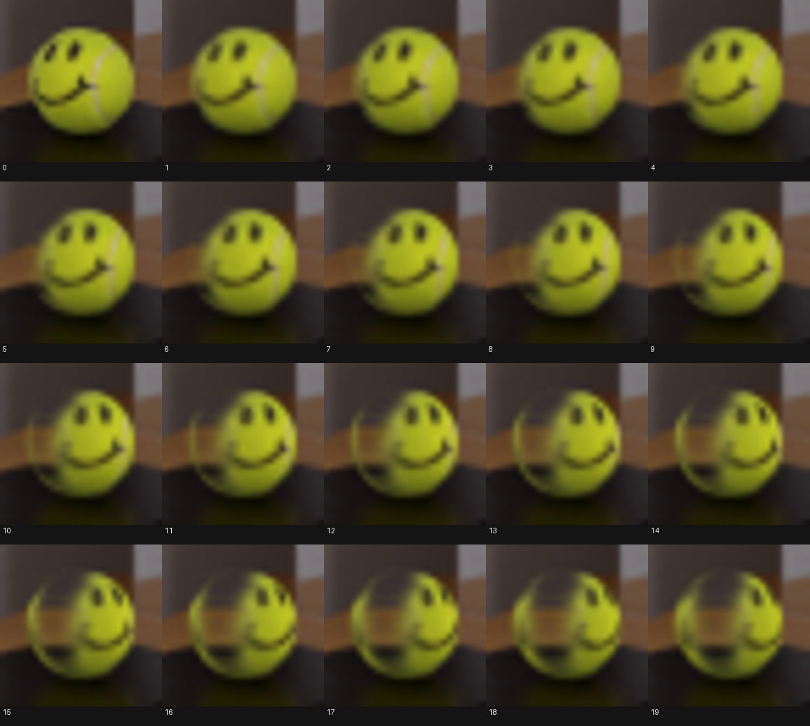
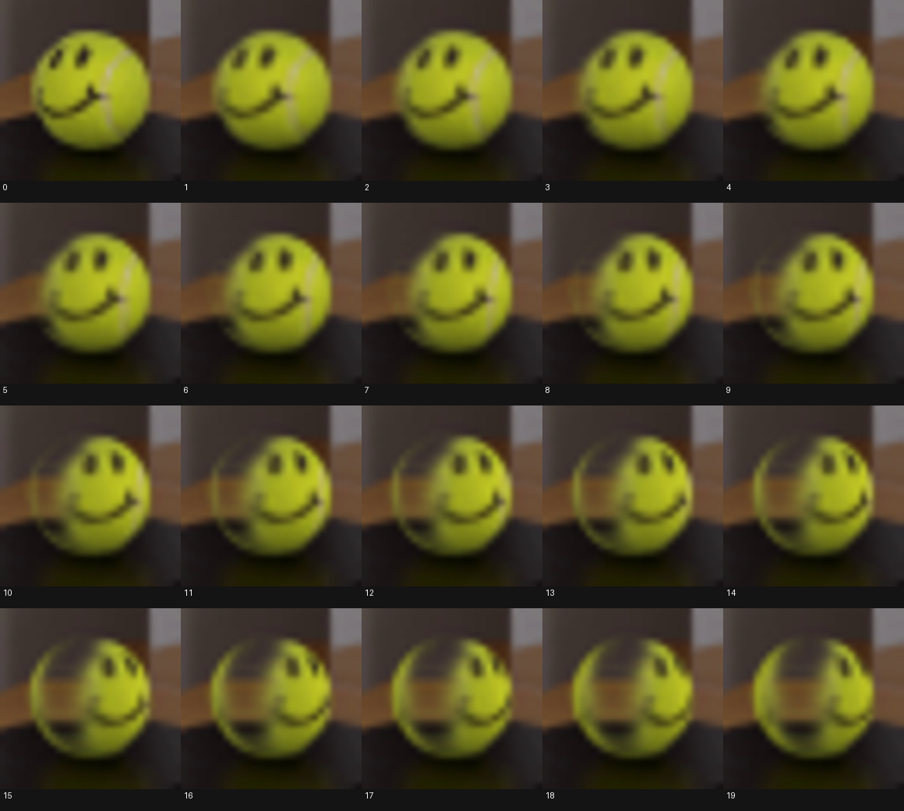
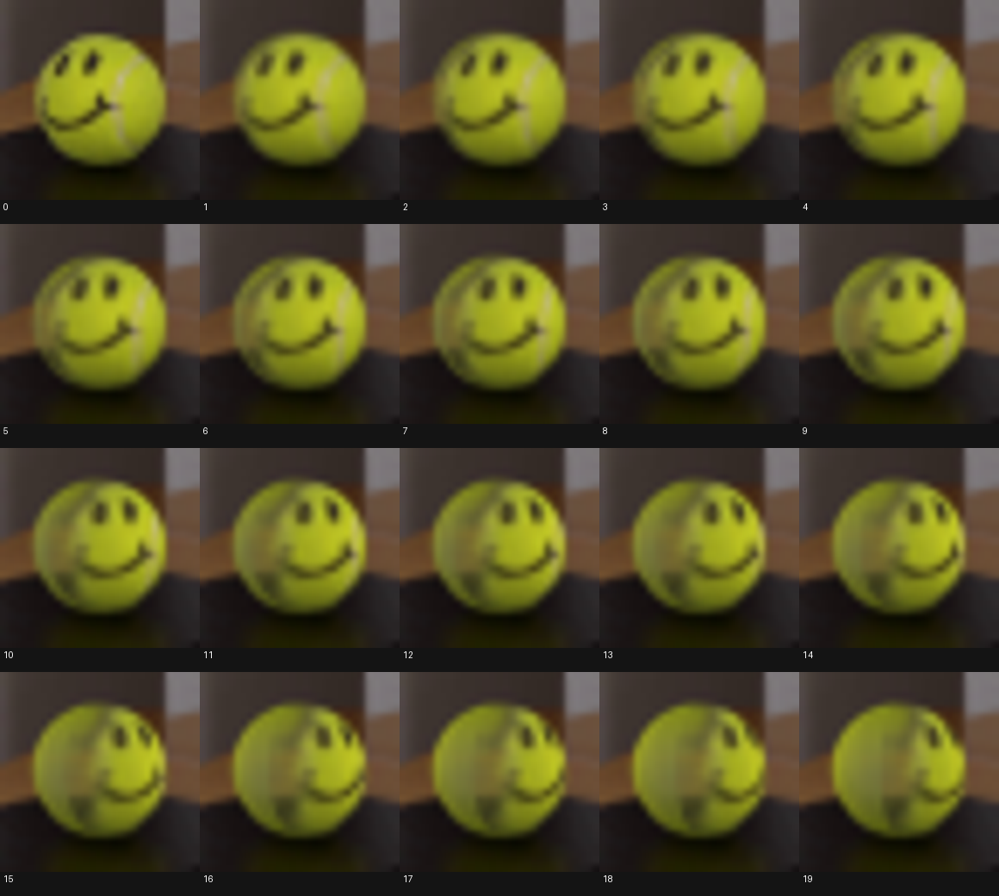
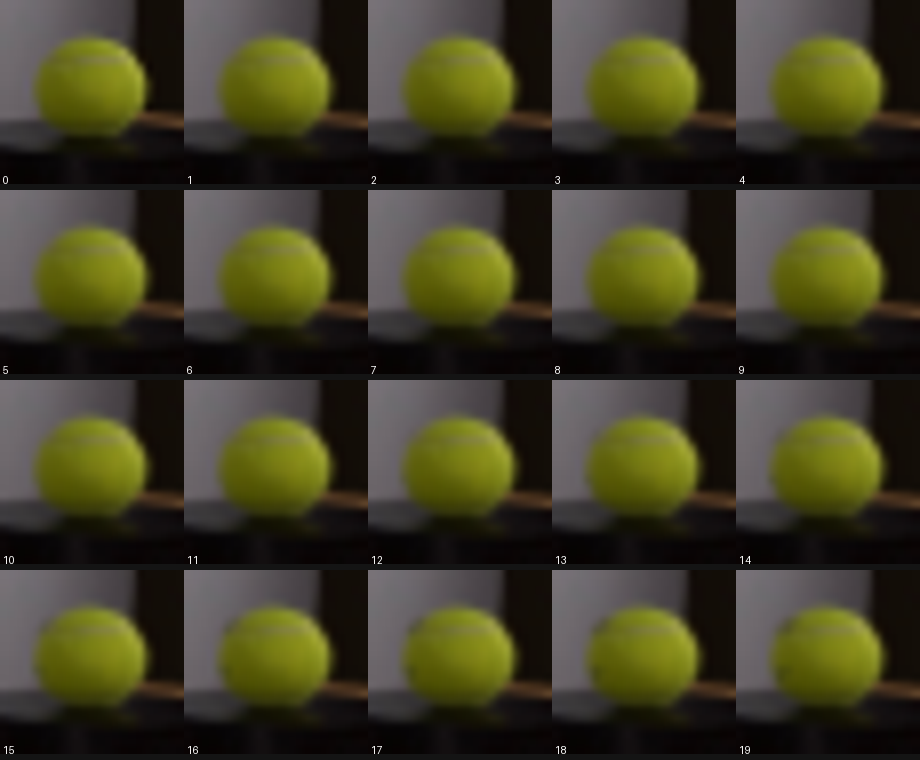
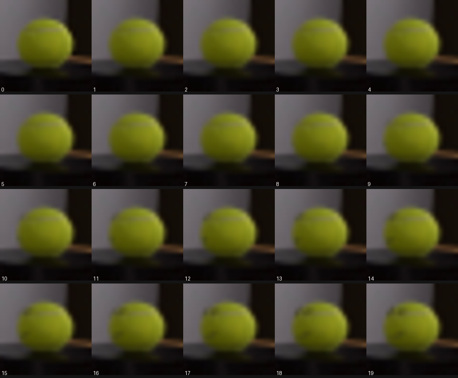

CODING AGENTS AS PIXEL WORLD MODELS
traex/GPT-5.6-Sol · 0118
点击播放 · 原生 RGB 像素
逐轮保存的候选
回放视频、检查图与代码变化。
每份候选均可单独播放。实际图片检查记录在下方工具轨迹中。
候选 01播放与检查图
点击播放 · 原生 RGB 像素

展开代码变化
--- 上一保存版本
+++ 本次保存版本
@@ -0,0 +1,164 @@
+from pathlib import Path
+import cv2
+import numpy as np
+from PIL import Image
+import artifact_io
+
+# PixelWorld case 0118: image-based, orthographic spherical texture rotation.
+# The original photographed pixels are used as the tennis-ball texture, while
+# an inpainted copy supplies the previously hidden side of the ball.
+ROOT = Path(__file__).resolve().parent
+SCALE = 6
+N = 20
+
+
+def smoothstep(a, b, x):
+ t = np.clip((x-a)/(b-a), 0.0, 1.0)
+ return t*t*(3.0-2.0*t)
+
+
+def make_sources(frame_rgb):
+ hi = cv2.resize(frame_rgb, None, fx=SCALE, fy=SCALE,
+ interpolation=cv2.INTER_CUBIC)
+ # Hand-localized black marker strokes on the 19-pixel photographed ball.
+ m = np.zeros(frame_rgb.shape[:2], np.uint8)
+ # eyes
+ cv2.ellipse(m, (154, 79), (2, 3), 17, 0, 360, 255, -1, cv2.LINE_AA)
+ cv2.ellipse(m, (160, 79), (2, 3), 12, 0, 360, 255, -1, cv2.LINE_AA)
+ # smile and its short upturned ends
+ cv2.ellipse(m, (158, 83), (6, 5), 0, 18, 162, 255, 2, cv2.LINE_AA)
+ cv2.line(m, (152, 85), (152, 83), 255, 2, cv2.LINE_AA)
+ cv2.line(m, (164, 85), (164, 83), 255, 2, cv2.LINE_AA)
+ # Keep the operation confined to the sphere.
+ yy, xx = np.ogrid[:144, :256]
+ ball = ((xx-158.4)/9.75)**2 + ((yy-84.0)/9.55)**2 <= .94**2
+ m[~ball] = 0
+ mh = cv2.resize(m, (256*SCALE, 144*SCALE), interpolation=cv2.INTER_CUBIC)
+ # A broad inpaint removes the writing but retains the photographed fuzz,
+ # seam, edge softness, illumination, and camera blur.
+ clean = cv2.inpaint(hi, (mh > 24).astype(np.uint8)*255,
+ 3*SCALE, cv2.INPAINT_TELEA)
+ # Actual stroke opacity is inferred from how much brighter inpainting made it.
+ g0 = cv2.cvtColor(hi, cv2.COLOR_RGB2GRAY).astype(np.float32)
+ g1 = cv2.cvtColor(clean, cv2.COLOR_RGB2GRAY).astype(np.float32)
+ feature = np.clip((g1-g0-2.0)/56.0, 0, 1) * (mh.astype(np.float32)/255.0)
+ feature = cv2.GaussianBlur(feature, (0, 0), .28*SCALE)
+ return hi, clean, feature
+
+
+def rotate_main(base, src, clean, theta):
+ """Reproject the photographed sphere after yawing its surface by theta."""
+ cx, cy, rx, ry = 158.35, 83.95, 9.82, 9.62
+ pad = 3
+ x0, x1 = int(np.floor(cx-rx-pad)), int(np.ceil(cx+rx+pad))+1
+ y0, y1 = int(np.floor(cy-ry-pad)), int(np.ceil(cy+ry+pad))+1
+ W, H = (x1-x0)*SCALE, (y1-y0)*SCALE
+ X = x0 + (np.arange(W, dtype=np.float32)+.5)/SCALE
+ Y = y0 + (np.arange(H, dtype=np.float32)+.5)/SCALE
+ X, Y = np.meshgrid(X, Y)
+ nx = (X-cx)/rx
+ ny = (Y-cy)/ry
+ rr = nx*nx + ny*ny
+ inside = rr < 1.0
+ z = np.sqrt(np.maximum(0.0, 1.0-rr))
+ lam_cam = np.arctan2(nx, z)
+ phi = np.arcsin(np.clip(-ny, -1, 1))
+ cp = np.cos(phi)
+ lam_mat = (lam_cam-theta + np.pi) % (2*np.pi) - np.pi
+
+ # An equirectangular material point is projected back into the original view.
+ # Hidden longitudes use the marker-free photographed tennis felt.
+ folded = np.arcsin(np.sin(lam_mat))
+ sxn = cp*np.sin(folded)
+ syn = -np.sin(phi)
+ mapx = ((cx + rx*sxn)*SCALE-.5).astype(np.float32)
+ mapy = ((cy + ry*syn)*SCALE-.5).astype(np.float32)
+ a = cv2.remap(src, mapx, mapy, cv2.INTER_CUBIC,
+ borderMode=cv2.BORDER_REFLECT_101)
+ b = cv2.remap(clean, mapx, mapy, cv2.INTER_CUBIC,
+ borderMode=cv2.BORDER_REFLECT_101)
+ front_material = (np.abs(lam_mat) < np.pi/2)[..., None]
+ ball = np.where(front_material, a, b).astype(np.float32)
+
+ # Preserve screen-space spherical illumination: the source has it baked in,
+ # but compensate slightly when a longitude is moved across the highlight.
+ src_screen_x = sxn
+ light_fix = 1.0 + .035*(nx-src_screen_x) - .025*np.maximum(ny, 0)
+ ball *= light_fix[..., None]
+ ball = np.clip(ball, 0, 255).astype(np.uint8)
+
+ # Antialiased silhouette, a touch fuzzy like the source photograph.
+ alpha = 1.0-smoothstep(.925, 1.018, np.sqrt(rr))
+ alpha *= inside | (rr < 1.04)
+ bg = cv2.resize(base[y0:y1, x0:x1], (W, H), interpolation=cv2.INTER_CUBIC)
+ comp = ball.astype(np.float32)*alpha[..., None] + bg.astype(np.float32)*(1-alpha[..., None])
+ small = cv2.resize(np.clip(comp,0,255).astype(np.uint8), (x1-x0, y1-y0),
+ interpolation=cv2.INTER_AREA)
+ out = base.copy()
+ out[y0:y1, x0:x1] = small
+ return out
+
+
+def update_reflection(base, feature, theta):
+ """Put the approaching smile into the real mirror image as the ball turns."""
+ cx, cy, rx, ry = 218.85, 63.45, 7.45, 6.95
+ pad = 2
+ x0, x1 = int(np.floor(cx-rx-pad)), int(np.ceil(cx+rx+pad))+1
+ y0, y1 = int(np.floor(cy-ry-pad)), int(np.ceil(cy+ry+pad))+1
+ W, H = (x1-x0)*SCALE, (y1-y0)*SCALE
+ X = x0 + (np.arange(W, dtype=np.float32)+.5)/SCALE
+ Y = y0 + (np.arange(H, dtype=np.float32)+.5)/SCALE
+ X, Y = np.meshgrid(X, Y)
+ nx, ny = (X-cx)/rx, (Y-cy)/ry
+ rr = nx*nx+ny*ny
+ z = np.sqrt(np.maximum(0.0, 1.0-rr))
+ lam_cam = np.arctan2(nx, z)
+ phi = np.arcsin(np.clip(-ny, -1, 1))
+ cp = np.cos(phi)
+
+ # The mirror initially sees a side about 110 degrees away from the face.
+ theta_mirror = np.deg2rad(-110.0) + theta
+ lam_mat = (lam_cam-theta_mirror + np.pi) % (2*np.pi)-np.pi
+ sxn = cp*np.sin(lam_mat)
+ syn = -np.sin(phi)
+ mcx, mcy, mrx, mry = 158.35, 83.95, 9.82, 9.62
+ mapx = ((mcx+mrx*sxn)*SCALE-.5).astype(np.float32)
+ mapy = ((mcy+mry*syn)*SCALE-.5).astype(np.float32)
+ f = cv2.remap(feature.astype(np.float32), mapx, mapy, cv2.INTER_LINEAR,
+ borderMode=cv2.BORDER_CONSTANT, borderValue=0)
+ f *= (np.abs(lam_mat) < np.pi/2).astype(np.float32)
+ f *= (rr < 1.0).astype(np.float32)
+ # Reflection is naturally softer and lower contrast than the direct ball.
+ f = cv2.GaussianBlur(f, (0,0), .32*SCALE)
+ f *= (1.0-smoothstep(.84, 1.0, np.sqrt(rr))) * .72
+
+ patch = cv2.resize(base[y0:y1, x0:x1], (W,H), interpolation=cv2.INTER_CUBIC).astype(np.float32)
+ # Dark marker ink reflects with a slight warm/green cast rather than pure black.
+ ink = np.zeros_like(patch)
+ ink[...,0], ink[...,1], ink[...,2] = 52, 53, 22
+ patch = patch*(1-f[...,None]) + ink*f[...,None]
+ small = cv2.resize(np.clip(patch,0,255).astype(np.uint8), (x1-x0,y1-y0),
+ interpolation=cv2.INTER_AREA)
+ out = base.copy()
+ out[y0:y1,x0:x1] = small
+ return out
+
+
+def main():
+ first = np.asarray(Image.open(ROOT/'first_frame.png').convert('RGB'), dtype=np.uint8)
+ assert first.shape == (144,256,3)
+ src, clean, feature = make_sources(first)
+ frames = [first.copy()]
+ # 75 degrees in 4.75 s: deliberately slow turntable motion, sampled uniformly.
+ for i in range(1, N):
+ theta = np.deg2rad(75.0) * (i/(N-1))
+ frame = rotate_main(first, src, clean, theta)
+ frame = update_reflection(frame, feature, theta)
+ frames.append(frame)
+ frames = np.stack(frames).astype(np.uint8)
+ assert np.array_equal(frames[0], first)
+ artifact_io.save(frames, ROOT)
+
+
+if __name__ == '__main__':
+ main()
候选 02播放与检查图
点击播放 · 原生 RGB 像素

展开代码变化
--- 上一保存版本
+++ 本次保存版本
@@ -34,10 +34,31 @@
ball = ((xx-158.4)/9.75)**2 + ((yy-84.0)/9.55)**2 <= .94**2
m[~ball] = 0
mh = cv2.resize(m, (256*SCALE, 144*SCALE), interpolation=cv2.INTER_CUBIC)
- # A broad inpaint removes the writing but retains the photographed fuzz,
- # seam, edge softness, illumination, and camera blur.
- clean = cv2.inpaint(hi, (mh > 24).astype(np.uint8)*255,
- 3*SCALE, cv2.INPAINT_TELEA)
+ # Fit the unmarked felt with a smooth low-order illumination surface. A
+ # normal inpaint tends to pull the brown table into this tiny, soft-edged
+ # ball; the robust fitted surface stays tennis-ball yellow even at the rim.
+ yy0, xx0 = np.mgrid[:144, :256].astype(np.float32)
+ xn, yn = (xx0-158.35)/9.82, (yy0-83.95)/9.62
+ sphere = xn*xn+yn*yn < .82
+ good = sphere & (m < 18) & (cv2.cvtColor(frame_rgb, cv2.COLOR_RGB2GRAY) > 78)
+ A = np.stack([np.ones_like(xn), xn, yn, xn*xn, xn*yn, yn*yn,
+ xn*xn*xn, yn*yn*yn], axis=-1)
+ coef = []
+ for c in range(3):
+ coef.append(np.linalg.lstsq(A[good], frame_rgb[...,c][good], rcond=None)[0])
+ Xh, Yh = np.meshgrid((np.arange(256*SCALE)+.5)/SCALE,
+ (np.arange(144*SCALE)+.5)/SCALE)
+ xh, yh = (Xh-158.35)/9.82, (Yh-83.95)/9.62
+ Ah = np.stack([np.ones_like(xh), xh, yh, xh*xh, xh*yh, yh*yh,
+ xh*xh*xh, yh*yh*yh], axis=-1)
+ model = np.stack([Ah@q for q in coef], axis=-1)
+ # Preserve a little photographed felt grain without retaining dark ink.
+ low = cv2.GaussianBlur(hi, (0,0), 1.7*SCALE).astype(np.float32)
+ grain = np.clip(hi.astype(np.float32)-low, -5, 5)
+ model = np.clip(model + .35*grain, 0, 255)
+ replace = cv2.GaussianBlur((mh > 14).astype(np.float32), (0,0), .7*SCALE)
+ clean = np.clip(hi.astype(np.float32)*(1-replace[...,None]) +
+ model*replace[...,None], 0, 255).astype(np.uint8)
# Actual stroke opacity is inferred from how much brighter inpainting made it.
g0 = cv2.cvtColor(hi, cv2.COLOR_RGB2GRAY).astype(np.float32)
g1 = cv2.cvtColor(clean, cv2.COLOR_RGB2GRAY).astype(np.float32)
候选 03播放与检查图
候选 04播放与检查图
点击播放 · 原生 RGB 像素

展开代码变化
--- 上一保存版本
+++ 本次保存版本
@@ -57,14 +57,23 @@
grain = np.clip(hi.astype(np.float32)-low, -5, 5)
model = np.clip(model + .35*grain, 0, 255)
replace = cv2.GaussianBlur((mh > 14).astype(np.float32), (0,0), .7*SCALE)
- clean = np.clip(hi.astype(np.float32)*(1-replace[...,None]) +
- model*replace[...,None], 0, 255).astype(np.uint8)
+ clean = np.clip(model, 0, 255).astype(np.uint8)
# Actual stroke opacity is inferred from how much brighter inpainting made it.
g0 = cv2.cvtColor(hi, cv2.COLOR_RGB2GRAY).astype(np.float32)
g1 = cv2.cvtColor(clean, cv2.COLOR_RGB2GRAY).astype(np.float32)
feature = np.clip((g1-g0-2.0)/56.0, 0, 1) * (mh.astype(np.float32)/255.0)
feature = cv2.GaussianBlur(feature, (0, 0), .28*SCALE)
- return hi, clean, feature
+ # Exclude bits of table that share the analytic ellipse at its extreme
+ # boundary. Without this validity matte those pixels become an implausible
+ # brown band when spherical texture coordinates are reprojected.
+ hsv = cv2.cvtColor(hi, cv2.COLOR_RGB2HSV)
+ valid = (((hsv[...,0] >= 20) & (hsv[...,0] <= 47) &
+ (hsv[...,1] > 62)) | (mh > 12)).astype(np.float32)
+ valid = cv2.GaussianBlur(valid, (0,0), .40*SCALE)
+ valid = np.clip(valid, 0, 1)
+ textured = np.clip(hi.astype(np.float32)*valid[...,None] +
+ model*(1-valid[...,None]), 0, 255).astype(np.uint8)
+ return textured, clean, feature
def rotate_main(base, src, clean, theta):
候选 05播放与检查图
点击播放 · 原生 RGB 像素


展开代码变化
--- 上一保存版本
+++ 本次保存版本
@@ -147,7 +147,7 @@
cp = np.cos(phi)
# The mirror initially sees a side about 110 degrees away from the face.
- theta_mirror = np.deg2rad(-110.0) + theta
+ theta_mirror = np.deg2rad(-100.0) + theta
lam_mat = (lam_cam-theta_mirror + np.pi) % (2*np.pi)-np.pi
sxn = cp*np.sin(lam_mat)
syn = -np.sin(phi)
@@ -179,9 +179,9 @@
assert first.shape == (144,256,3)
src, clean, feature = make_sources(first)
frames = [first.copy()]
- # 75 degrees in 4.75 s: deliberately slow turntable motion, sampled uniformly.
+ # 90 degrees in 4.75 s: deliberately slow turntable motion, sampled uniformly.
for i in range(1, N):
- theta = np.deg2rad(75.0) * (i/(N-1))
+ theta = np.deg2rad(90.0) * (i/(N-1))
frame = rotate_main(first, src, clean, theta)
frame = update_reflection(frame, feature, theta)
frames.append(frame)
可观测工具轨迹
实际执行的命令与返回图片。
命令 1exit 0
/bin/bash -lc "cat GENERATION_RULES.md && printf '\\n---PROMPT---\\n' && cat prompt.txt"
命令 2exit 0
/bin/bash -lc "find . -maxdepth 2 -type f -printf '%p %s bytes\\n' | sort"
命令 3exit 0
/bin/bash -lc "which ffmpeg; python - <<'PY' import importlib.util for m in ['cv2','PIL','numpy','imageio','moviepy','torch']: print(m, bool(importlib.util.find_spec(m))) PY"
命令 4exit 0
/bin/bash -lc "python - <<'PY'
from PIL import Image
im=Image.open('first_frame.png')
im.crop((130,55,235,108)).resize((840,424)).save('.tmp/crop.png')
PY"命令 5exit 0
/bin/bash -lc "python - <<'PY'
import cv2, numpy as np
im=cv2.imread('first_frame.png'); h=cv2.cvtColor(im,cv2.COLOR_BGR2HSV)
for name,cond in [('sat',h[:,:,1]>100),('green',(h[:,:,0]>20)&(h[:,:,0]<50)&(h[:,:,1]>80)&(h[:,:,2]>60))]:
n,lab,st,cen=cv2.connectedComponentsWithStats(cond.astype('uint8'))
print(name)
for i in range(1,n):
x,y,w,hh,a=st[i]
if a>10: print(x,y,w,hh,a,cen[i])
print('patch RGB')
for y in range(74,94):
print(y,[(x,im[y,x,::-1].tolist(),h[y,x].tolist()) for x in range(147,170) if h[y,x,1]>60])
PY"命令 6exit 0
/bin/bash -lc 'cat artifact_io.py'
命令 7exit 0
/bin/bash -lc "cat > generate.py <<'PY'
from pathlib import Path
import cv2
import numpy as np
from PIL import Image
import artifact_io
# PixelWorld case 0118: image-based, orthographic spherical texture rotation.
# The original photographed pixels are used as the tennis-ball texture, while
# an inpainted copy supplies the previously hidden side of the ball.
ROOT = Path(__file__).resolve().parent
SCALE = 6
N = 20
def smoothstep(a, b, x):
t = np.clip((x-a)/(b-a), 0.0, 1.0)
return t*t*(3.0-2.0*t)
def make_sources(frame_rgb):
hi = cv2.resize(frame_rgb, None, fx=SCALE, fy=SCALE,
interpolation=cv2.INTER_CUBIC)
# Hand-localized black marker strokes on the 19-pixel photographed ball.
m = np.zeros(frame_rgb.shape[:2], np.uint8)
# eyes
cv2.ellipse(m, (154, 79), (2, 3), 17, 0, 360, 255, -1, cv2.LINE_AA)
cv2.ellipse(m, (160, 79), (2, 3), 12, 0, 360, 255, -1, cv2.LINE_AA)
# smile and its short upturned ends
cv2.ellipse(m, (158, 83), (6, 5), 0, 18, 162, 255, 2, cv2.LINE_AA)
cv2.line(m, (152, 85), (152, 83), 255, 2, cv2.LINE_AA)
cv2.line(m, (164, 85), (164, 83), 255, 2, cv2.LINE_AA)
# Keep the operation confined to the sphere.
yy, xx = np.ogrid[:144, :256]
ball = ((xx-158.4)/9.75)**2 + ((yy-84.0)/9.55)**2 <= .94**2
m[~ball] = 0
mh = cv2.resize(m, (256*SCALE, 144*SCALE), interpolation=cv2.INTER_CUBIC)
# A broad inpaint removes the writing but retains the photographed fuzz,
# seam, edge softness, illumination, and camera blur.
clean = cv2.inpaint(hi, (mh > 24).astype(np.uint8)*255,
3*SCALE, cv2.INPAINT_TELEA)
# Actual stroke opacity is inferred from how much brighter inpainting made it.
g0 = cv2.cvtColor(hi, cv2.COLOR_RGB2GRAY).astype(np.float32)
g1 = cv2.cvtColor(clean, cv2.COLOR_RGB2GRAY).astype(np.float32)
feature = np.clip((g1-g0-2.0)/56.0, 0, 1) * (mh.astype(np.float32)/255.0)
feature = cv2.GaussianBlur(feature, (0, 0), .28*SCALE)
return hi, clean, feature
def rotate_main(base, src, clean, theta):
\"\"\"Reproject the photographed sphere after yawing its surface by theta.\"\"\"
cx, cy, rx, ry = 158.35, 83.95, 9.82, 9.62
pad = 3
x0, x1 = int(np.floor(cx-rx-pad)), int(np.ceil(cx+rx+pad))+1
y0, y1 = int(np.floor(cy-ry-pad)), int(np.ceil(cy+ry+pad))+1
W, H = (x1-x0)*SCALE, (y1-y0)*SCALE
X = x0 + (np.arange(W, dtype=np.float32)+.5)/SCALE
Y = y0 + (np.arange(H, dtype=np.float32)+.5)/SCALE
X, Y = np.meshgrid(X, Y)
nx = (X-cx)/rx
ny = (Y-cy)/ry
rr = nx*nx + ny*ny
inside = rr < 1.0
z = np.sqrt(np.maximum(0.0, 1.0-rr))
lam_cam = np.arctan2(nx, z)
phi = np.arcsin(np.clip(-ny, -1, 1))
cp = np.cos(phi)
lam_mat = (lam_cam-theta + np.pi) % (2*np.pi) - np.pi
# An equirectangular material point is projected back into the original view.
# Hidden longitudes use the marker-free photographed tennis felt.
folded = np.arcsin(np.sin(lam_mat))
sxn = cp*np.sin(folded)
syn = -np.sin(phi)
mapx = ((cx + rx*sxn)*SCALE-.5).astype(np.float32)
mapy = ((cy + ry*syn)*SCALE-.5).astype(np.float32)
a = cv2.remap(src, mapx, mapy, cv2.INTER_CUBIC,
borderMode=cv2.BORDER_REFLECT_101)
b = cv2.remap(clean, mapx, mapy, cv2.INTER_CUBIC,
borderMode=cv2.BORDER_REFLECT_101)
front_material = (np.abs(lam_mat) < np.pi/2)[..., None]
ball = np.where(front_material, a, b).astype(np.float32)
# Preserve screen-space spherical illumination: the source has it baked in,
# but compensate slightly when a longitude is moved across the highlight.
src_screen_x = sxn
light_fix = 1.0 + .035*(nx-src_screen_x) - .025*np.maximum(ny, 0)
ball *= light_fix[..., None]
ball = np.clip(ball, 0, 255).astype(np.uint8)
# Antialiased silhouette, a touch fuzzy like the source photograph.
alpha = 1.0-smoothstep(.925, 1.018, np.sqrt(rr))
alpha *= inside | (rr < 1.04)
bg = cv2.resize(base[y0:y1, x0:x1], (W, H), interpolation=cv2.INTER_CUBIC)
comp = ball.astype(np.float32)*alpha[..., None] + bg.astype(np.float32)*(1-alpha[..., None])
small = cv2.resize(np.clip(comp,0,255).astype(np.uint8), (x1-x0, y1-y0),
interpolation=cv2.INTER_AREA)
out = base.copy()
out[y0:y1, x0:x1] = small
return out
def update_reflection(base, feature, theta):
\"\"\"Put the approaching smile into the real mirror image as the ball turns.\"\"\"
cx, cy, rx, ry = 218.85, 63.45, 7.45, 6.95
pad = 2
x0, x1 = int(np.floor(cx-rx-pad)), int(np.ceil(cx+rx+pad))+1
y0, y1 = int(np.floor(cy-ry-pad)), int(np.ceil(cy+ry+pad))+1
W, H = (x1-x0)*SCALE, (y1-y0)*SCALE
X = x0 + (np.arange(W, dtype=np.float32)+.5)/SCALE
Y = y0 + (np.arange(H, dtype=np.float32)+.5)/SCALE
X, Y = np.meshgrid(X, Y)
nx, ny = (X-cx)/rx, (Y-cy)/ry
rr = nx*nx+ny*ny
z = np.sqrt(np.maximum(0.0, 1.0-rr))
lam_cam = np.arctan2(nx, z)
phi = np.arcsin(np.clip(-ny, -1, 1))
cp = np.cos(phi)
# The mirror initially sees a side about 110 degrees away from the face.
theta_mirror = np.deg2rad(-110.0) + theta
lam_mat = (lam_cam-theta_mirror + np.pi) % (2*np.pi)-np.pi
sxn = cp*np.sin(lam_mat)
syn = -np.sin(phi)
mcx, mcy, mrx, mry = 158.35, 83.95, 9.82, 9.62
mapx = ((mcx+mrx*sxn)*SCALE-.5).astype(np.float32)
mapy = ((mcy+mry*syn)*SCALE-.5).astype(np.float32)
f = cv2.remap(feature.astype(np.float32), mapx, mapy, cv2.INTER_LINEAR,
borderMode=cv2.BORDER_CONSTANT, borderValue=0)
f *= (np.abs(lam_mat) < np.pi/2).astype(np.float32)
f *= (rr < 1.0).astype(np.float32)
# Reflection is naturally softer and lower contrast than the direct ball.
f = cv2.GaussianBlur(f, (0,0), .32*SCALE)
f *= (1.0-smoothstep(.84, 1.0, np.sqrt(rr))) * .72
patch = cv2.resize(base[y0:y1, x0:x1], (W,H), interpolation=cv2.INTER_CUBIC).astype(np.float32)
# Dark marker ink reflects with a slight warm/green cast rather than pure black.
ink = np.zeros_like(patch)
ink[...,0], ink[...,1], ink[...,2] = 52, 53, 22
patch = patch*(1-f[...,None]) + ink*f[...,None]
small = cv2.resize(np.clip(patch,0,255).astype(np.uint8), (x1-x0,y1-y0),
interpolation=cv2.INTER_AREA)
out = base.copy()
out[y0:y1,x0:x1] = small
return out
def main():
first = np.asarray(Image.open(ROOT/'first_frame.png').convert('RGB'), dtype=np.uint8)
assert first.shape == (144,256,3)
src, clean, feature = make_sources(first)
frames = [first.copy()]
# 75 degrees in 4.75 s: deliberately slow turntable motion, sampled uniformly.
for i in range(1, N):
theta = np.deg2rad(75.0) * (i/(N-1))
frame = rotate_main(first, src, clean, theta)
frame = update_reflection(frame, feature, theta)
frames.append(frame)
frames = np.stack(frames).astype(np.uint8)
assert np.array_equal(frames[0], first)
artifact_io.save(frames, ROOT)
if __name__ == '__main__':
main()
PY
python generate.py
python - <<'PY'
import numpy as np
from PIL import Image
f=np.array(Image.open('frames/00.png')); o=np.array(Image.open('first_frame.png'))
print('frame0 exact',np.array_equal(f,o),'max',np.abs(f.astype(int)-o).max())
PY"命令 8exit 0
/bin/bash -lc "python - <<'PY'
from PIL import Image,ImageDraw
ims=[]
for i in range(20):
im=Image.open(f'frames/{i:02d}.png').crop((144,70,173,99)).resize((232,232))
ims.append(im)
out=Image.new('RGB',(232*5,260*4),(20,20,20));d=ImageDraw.Draw(out)
for i,im in enumerate(ims):
x=(i%5)*232;y=(i//5)*260;out.paste(im,(x,y));d.text((x+4,y+234),str(i),fill='white')
out.save('.tmp/seq.png')
PY"命令 9exit 0
/bin/bash -lc "python generate.py && python - <<'PY'
from PIL import Image,ImageDraw
out=Image.new('RGB',(232*5,260*4),(20,20,20));d=ImageDraw.Draw(out)
for i in range(20):
im=Image.open(f'frames/{i:02d}.png').crop((144,70,173,99)).resize((232,232))
x=(i%5)*232;y=(i//5)*260;out.paste(im,(x,y));d.text((x+4,y+234),str(i),fill='white')
out.save('.tmp/seq2.png')
PY"命令 10exit 0
/bin/bash -lc "python generate.py && python - <<'PY'
from PIL import Image,ImageDraw
out=Image.new('RGB',(232*5,260*4),(20,20,20));d=ImageDraw.Draw(out)
for i in range(20):
im=Image.open(f'frames/{i:02d}.png').crop((144,70,173,99)).resize((232,232))
x=(i%5)*232;y=(i//5)*260;out.paste(im,(x,y));d.text((x+4,y+234),str(i),fill='white')
out.save('.tmp/seq3.png')
PY"命令 11exit 0
/bin/bash -lc "python - <<'PY'
from PIL import Image,ImageDraw
out=Image.new('RGB',(184*5,190*4),(20,20,20));d=ImageDraw.Draw(out)
for i in range(20):
im=Image.open(f'frames/{i:02d}.png').crop((208,53,231,76)).resize((184,184))
x=(i%5)*184;y=(i//5)*190;out.paste(im,(x,y));d.text((x+3,y+174),str(i),fill='white')
out.save('.tmp/mirror.png')
PY
python - <<'PY'
import numpy as np, os
from PIL import Image
fs=np.stack([np.array(Image.open(f'frames/{i:02d}.png')) for i in range(20)])
orig=np.array(Image.open('first_frame.png'))
print('shape',fs.shape,fs.dtype,'f0',np.array_equal(fs[0],orig))
for i in [1,5,10,15,19]: print(i, np.count_nonzero(np.any(fs[i]"'!=orig,axis=2)), np.abs(fs[i].astype(int)-orig).max())
print('"'artifacts',[(f,os.path.getsize(f)) for f in ['pixels.npz','index.html','inspection.png','frames/19.png']])
PY"命令 12exit 0
/bin/bash -lc "python generate.py && python - <<'PY'
from PIL import Image,ImageDraw
out=Image.new('RGB',(184*5,190*4),(20,20,20));d=ImageDraw.Draw(out)
for i in range(20):
im=Image.open(f'frames/{i:02d}.png').crop((208,53,231,76)).resize((184,184))
x=(i%5)*184;y=(i//5)*190;out.paste(im,(x,y));d.text((x+3,y+174),str(i),fill='white')
out.save('.tmp/mirror2.png')
PY"命令 13exit 0
/bin/bash -lc "python -m py_compile generate.py && python - <<'PY'
import numpy as np
from PIL import Image
f=np.stack([np.asarray(Image.open(f'frames/{i:02d}.png').convert('RGB')) for i in range(20)])
o=np.asarray(Image.open('first_frame.png').convert('RGB'))
assert f.shape==(20,144,256,3) and f.dtype==np.uint8
assert np.array_equal(f[0],o)
z=np.load('pixels.npz')['pixels']
assert z.shape==(144,256,20)
# verify packed submission corresponds exactly
u=f.astype(np.uint32); p=((u[:,:,:,0]<<16)|(u[:,:,:,1]<<8)|u[:,:,:,2]).transpose(1,2,0)
assert np.array_equal(z,p)
print('all checks passed; changed pixels last:',np.any(f[-1]"'!=o,axis=2).sum())
PY'视觉工具实际返回图片 1

视觉工具实际返回图片 2

视觉工具实际返回图片 3

视觉工具实际返回图片 4

视觉工具实际返回图片 5

视觉工具实际返回图片 6

视觉工具实际返回图片 7

视觉工具实际返回图片 8

保存候选 5 份；完成命令 13 次；可验证图片返回 8 张。原始 API 响应与完整日志保留在本地。